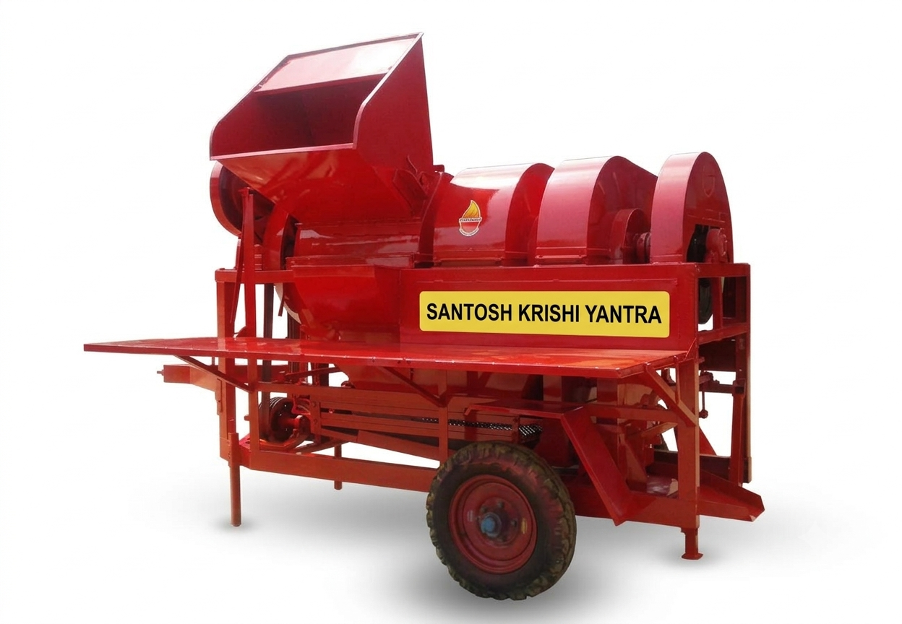

01Machine Model 01
मुख्य नाम: मल्टी-क्रॉप थ्रेशर, थ्रेसर (Multi-Crop Thresher)
मध्य प्रदेश में प्रचलित नाम: थ्रेशर, गहाई मशीन, कटर (Thresher, Gahai Machine, Cutter)
उपयोग: कटी हुई फसलों (जैसे गेहूं, चना, सोयाबीन, सरसों) से अनाज और भूसे (चारा) को अलग करने के लिए इसका उपयोग किया जाता है।